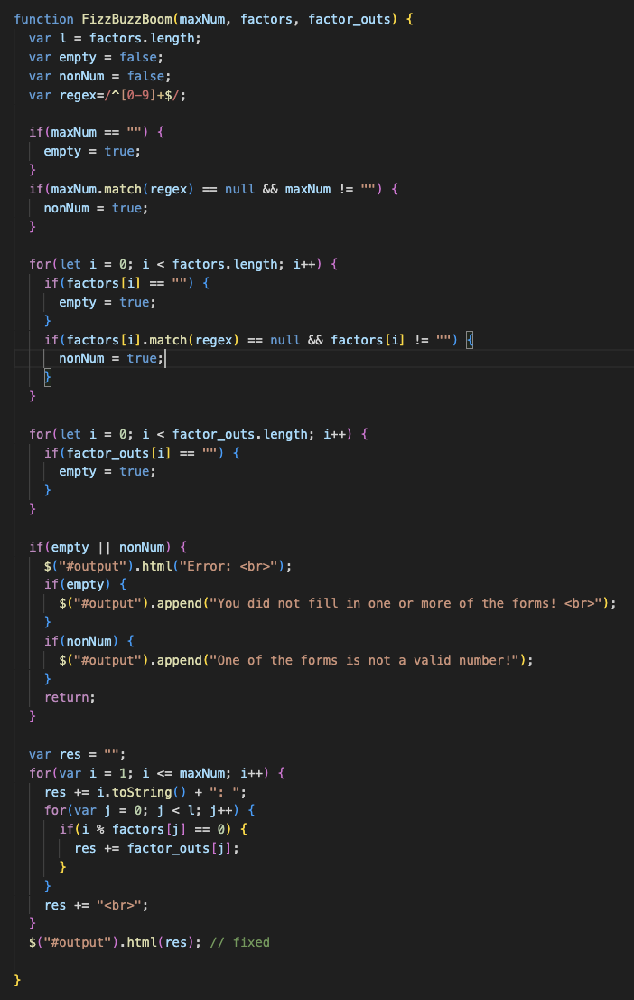
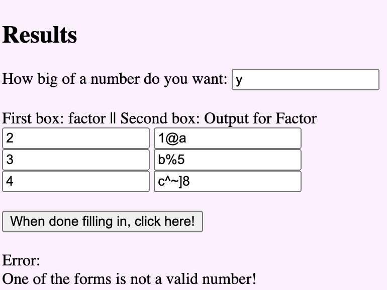
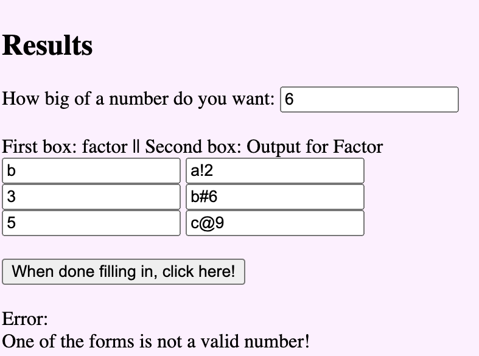
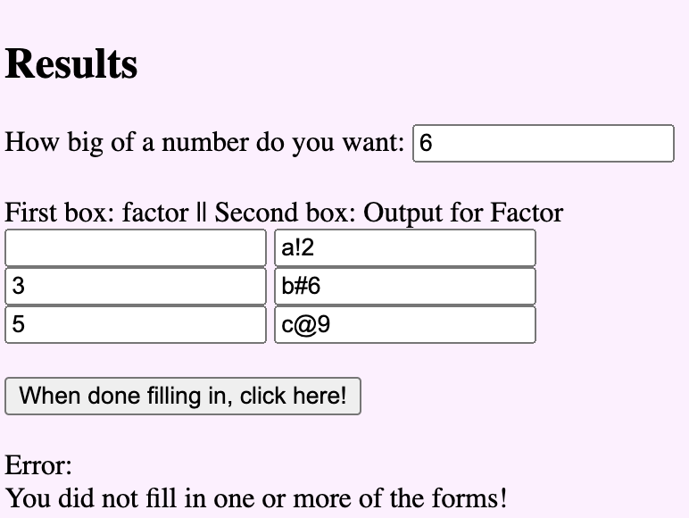

Lab 14 - Debugging Tools & Strategies
Challenge
My challenges are all listed in the debugging result section.
Problems
My problems are all listed in the debugging result section.
Results
Looking back at this lab, I realized that the program would behave in an undefined manner if the user were to input non-numerical values instead of numbers for the maxNum or factors. Therefore, I decided to add more error handling for that. I found out a way using regular expressions, and had some bumps along the way.
I first noticed that using the regular expression wasn't capturing non-numerical values at first. After printing out the var.match(regex) value to the console, I realized that the value would be null if there was no match. I thought that the value was going to be true if it didn't match but evidently, I thought wrong (aka I thought the opposite).
After that, it finally began capturing non-numerical values. However, the regex also captured empty values and displayed the non-numerical error message along with the empty value message when it was just an empty field. That I did not want. Therefore, I added on last condition while searching for non-numerical values - it cannot be empty. After that, my program worked completely as expected.
Below you can see my code and how my website reacts to certain user inputs:
   